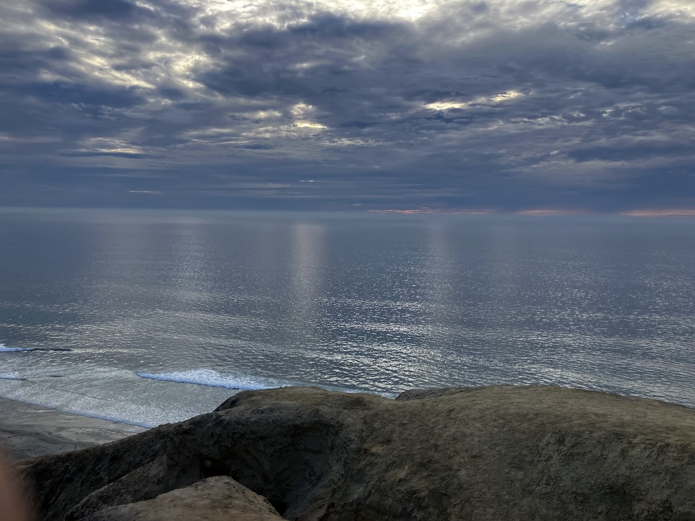

Torrey Pines Gliderport is situated upon the cliffs of La Jolla overlooking Blacks Beach. I love going close to cliff edge with the ocean breeze in my face and the sounds of the waves.

An ocean view overlooking the horizon from the cliff's edge. The sky is cloudy, with small breaks of sunlight scattered amongst the clouds. The waves below are dotted with flickering reflected lights upon the ocean surface.
I highly recommend going during sunset or sunrise when the skies are clear. It is a beautiful, peaceful view. Great for meditation or just plain relaxation. If you mind getting sand on your things, then I also recommend bringing a blanket to lay down on.
Nearby locations you should visit in the area: